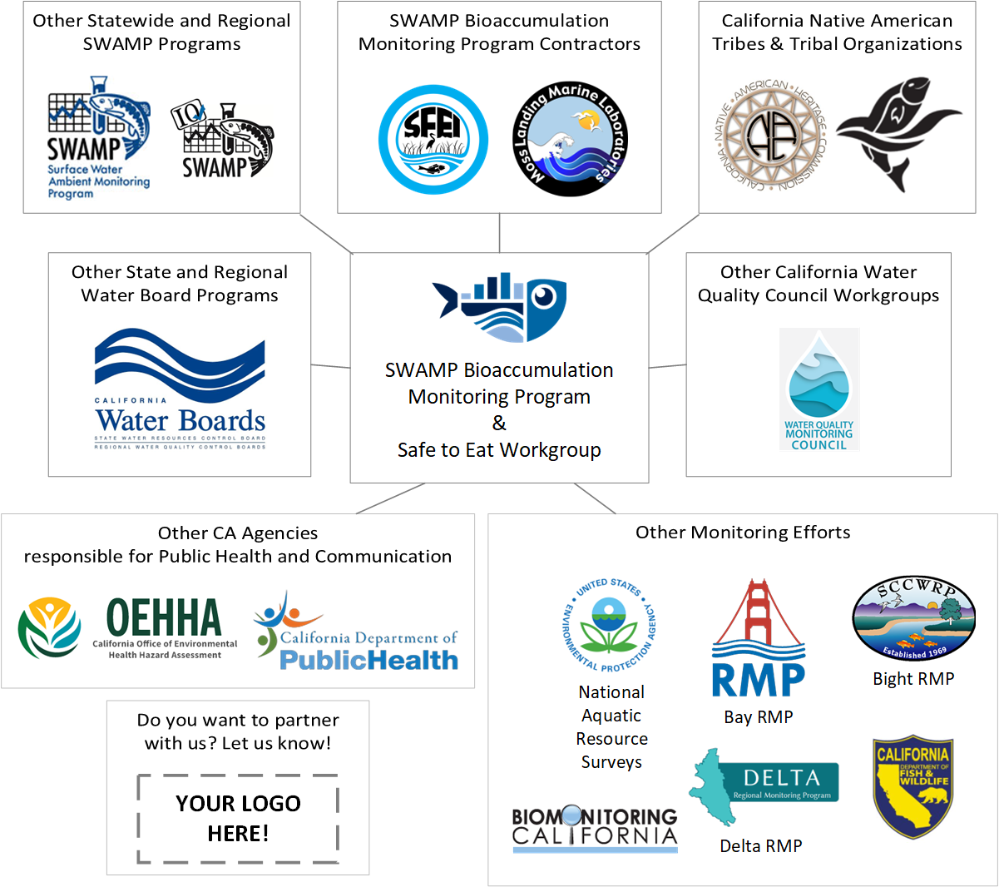

Who are our partners?
Overview
Understanding and addressing issues and impacts of bioaccumulation throughout all California waterbodes is nuanced and complex, and therefore requires multiple partners working together to achieve common goals. The SWAMP Bioaccumulation Monitoring Program (Program) and Safe to Eat Workgroup (STEW) are highly collaborative, and we’re always looking for new collaborators and partners!
Partner Network
Below is a visual representation of the partners currently in our network as well as descriptions of and links to partner websites.

SWAMP Bioaccumulation Monitoring Program Contractors
Moss Landing Marine Laboratories’ (MLML) Marine Pollution Studies Laboratory (MPSL): Our MLML/MPSL partners lead the sample collection and processing efforts.
San Francisco Estuary Institute (SFEI): Our SFEI partners lead the data analysis, interpretation and reporting process, and help Co-chair the STEW!
Other SWAMP Programs
SWAMP Regional Monitoring Programs: Many Regional SWAMP Programs augment the efforts of the Statewide Bioaccumulation Monitoring Program, or conduct bioaccumulation related studies of their own to address regionally-specific water quality concerns.
SWAMP Information Management and Quality Assurance Center (SWAMP IQ): SWAMP IQ conducts a thorough quality assurance review and verification of all of our data before adding the data to our public data systems.
SWAMP Statewide Freshwater and Estuarine Harmful Algal Bloom (FHAB) Program: We’re working with the FHAB Program to better understand the nexus between harmful algal blooms and bioaccumulation risks.
SWAMP eDNA Metabarcoding Monitoring and Analysis Project (SeMMAP): We’re beginning to work with SeMMAP to better understand the extent to which environmental DNA (eDNA) can be used to support our monitoring efforts.
Other Monitoring Efforts
Whenever possible, we try to collaborate with other bioaccumulation monitoring programs, including:
Other California State Agencies
We work closely with other CA State Agencies to make sure our data is used to protect public health, and is communicated effectively in the public health space so that those that are most impacted by consuming contaminated fish and shellfish can make informed decisions to reduce their exposure to harmful pollutants in fish and shellfish.
The Office of Environmental Health Hazard Assessment (OEHHA) is the lead state agency for the assessment of health risks posed by environmental contaminants. OEHHA uses our data to develop site specific and statewide fish advisories.
The California Department of Public Health (CDPH) is the state department responsible for public health in California. We’re building stronger relationships with some of their programs (e.g., Center for Healthy Communities) to more efficiently and effectively achieve our respective missions.
The California Department of Fish and Wildlife (CDFW) is the state department responsible for managing California’s fish, wildlife, and plant resources, and the habitats upon which they depend. We’re building stronger relationships with some of their programs (e.g., Regional monitoring experts, Fishing in the City) to more efficiently and effectively achieve our respective missions.
Other State and Regional Water Board Programs
The State Water Resources Control Board (State Water Board) and the nine Regional Water Quality Control Boards (Regional Water Boards), collectively known as the California Water Boards (Water Boards) are dedicated to a single mission:
To preserve, enhance, and restore the quality of California’s water resources and drinking water for the protection of the environment, public health, and all beneficial uses, and to ensure proper water resource allocation and efficient use, for the benefit of present and future generations.
Under the federal Clean Water Act (CWA) and the state’s pioneering Porter-Cologne Water Quality Control Act, the State and Regional Water Boards have regulatory responsibility for protecting the water quality of nearly 1.6 million acres of lakes, 1.3 million acres of bays and estuaries, 211,000 miles of rivers and streams, and about 1,100 miles of exquisite California coastline!
There are a number of programs that partner with us and/or use our data to inform their work, including:
- Tribal Affairs and their Tribal Beneficial Use efforts
- Statewide Mercury Control Program
- Integrated Report Program
- TMDL Programs
- Bacteria Objectives
- Biostimulation, Cyanotoxins, and Biological Condition Provisions
- Ocean Standards Unit
- Wetlands Program
- Constituents of Emerging Concern (CEC)
- Per- and Polyfluoroalkyl Substances (PFAS)
For more details on how our data are used in some of these programs, see:
California Native American Tribes & Tribal Organizations
California Indian Environmental Alliance (CIEA): We work closely with our CIEA partners on a number of bioaccumulation related projects. CIEA is also an active member of the STEW!
We’re working on building more relationships with California Native American Tribes through the Program’s equity initiatives. See the Tribal Engagement FAQ for more information on how tribes and tribal organizations can engage with the Program and/or the STEW.
Other California Water Quality Monitoring Council Workgroups
Equity Workgroup: STEW Co-chairs are actively involved with this Workgroup and its efforts to operationalize equity in all levels of the Council.
We’re working on building stronger partnerships with the following Workgroups:
Academic Institutions
We’re working on building more relationships with the academic community so we can leverage our partnerships, advance needed research, and connect with emerging academics and future scientists and leaders of California! Partner academic institutions include:
- CSU-WATER (Water Advocacy for Education and Research)
- CSU COAST (Council on Ocean Affairs, Science & Technology)
Are you at an academic institution conducting research related to bioaccumulation, fish advisory development, and/or statewide bioaccumulation monitoring efforts - but are not included in the list above? Please let us know by emailing the SWAMP Bioaccumulation Monitoring Program Coordinator & STEW Co-chair at Anna.Holder@waterboards.ca.gov!